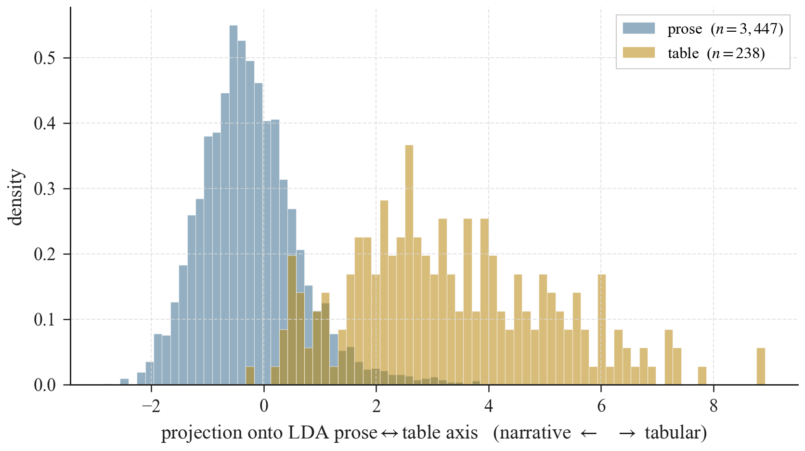
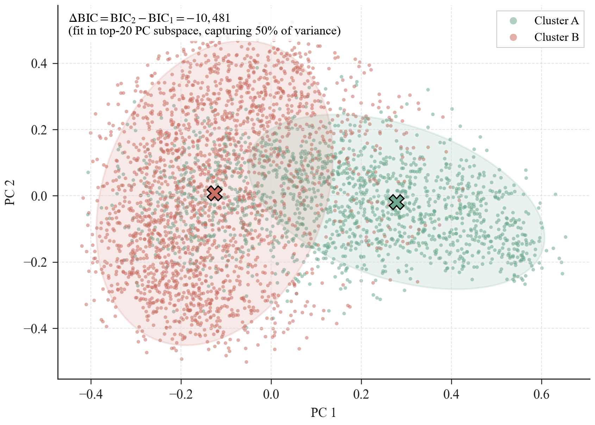
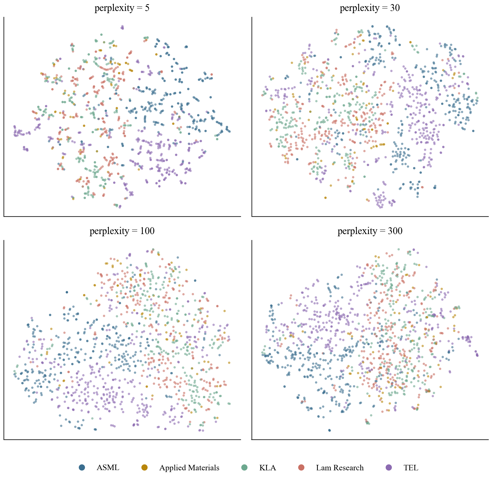
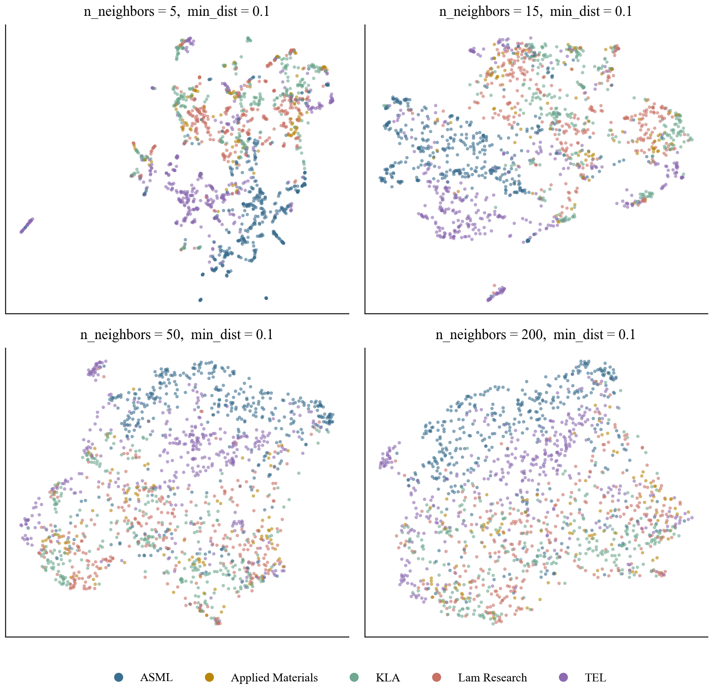

The 3-D scatter in the viewer is a PCA projection — a linear, variance-maximising map from \(\mathbb{R}^{384}\) to \(\mathbb{R}^{3}\). Any structure it shows could in principle be an artefact of that particular projection. The four methods below interrogate the same 384-D cloud from independent angles: LDA with supervised class labels, GMM as an unsupervised density fit, t-SNE and UMAP as nonlinear neighbourhood-preserving embeddings. If a finding survives all four, it is a property of the corpus and not of one plot.
One structural note before any numbers: Applied Materials ships a lean standalone Impact Report; KLA and Lam sit in the middle; TEL and ASML fold their ESG disclosure into Integrated / Annual Reports, so their corpora are longer and mix in management discussion, risk factors, and audit-committee prose. Any per-firm metric computed without conditioning on content-type reads that format confound as a voice difference.
Given class labels \(A\) (prose) and \(B\) (table), LDA finds the 1-D direction that maximises Fisher’s ratio, i.e. the projected signal-to-noise:
\( \displaystyle J(w) \;=\; \frac{(w^{\top}(μ_A-μ_B))^2} {w^{\top}\,S_W\,w}, \qquad w^{\star} \;\propto\; S_W^{-1}(μ_A-μ_B). \)
The class labels are cheap: a chunk is called tabular if its digit density exceeds a threshold, prose otherwise — a purely surface feature the sentence encoder was never told to model.

An unsupervised counterpart to the LDA test. Fit
\( \displaystyle p(x) \;=\; π_1\,\mathcal{N}(x \mid μ_1, Σ_1) \;+\; π_2\,\mathcal{N}(x \mid μ_2, Σ_2) \)
in the top-20 PC subspace via EM, then compare against a one-component fit using BIC:
\( \displaystyle \text{BIC} \;=\; -2\ln L \;+\; k\,\ln n, \qquad \Delta\text{BIC} \;=\; \text{BIC}_{2} - \text{BIC}_{1}. \)
The \(k\ln n\) penalty guards against over-fitting spurious modes at the cost of parameter parsimony. A large negative \(\Delta\text{BIC}\) says two components are worth the extra parameters. On this corpus the recovered components empirically align with the LDA axis — the density preferred by the data agrees with the direction preferred by the labels.

t-SNE encodes each high-D point’s neighbourhood as a probability distribution over other points (Gaussian kernel, per-point bandwidth chosen to hit a target perplexity) and finds a low-D layout whose neighbourhood distributions — defined by a heavy-tailed Student’s t kernel — minimise the KL divergence to the high-D distributions:
\( \displaystyle \mathrm{KL}(P \;\|\; Q) \;=\; \sum_{i \neq j} p_{ij} \,\log\!\left( \tfrac{p_{ij}}{q_{ij}} \right). \)
The heavy tail on \(Q\) is what buys the "clusters look separated" behaviour — far-apart pairs are weakly penalised. Perplexity plays the role of an effective neighbourhood size, not a cluster count. Global distances in a t-SNE layout are not to scale and should not be interpreted as such.

UMAP builds a weighted \(k\)-nearest-neighbour graph in high-D
and finds low-D coordinates whose graph minimises a cross-entropy
against the high-D one. The two exposed knobs are n_neighbors
(analogous to perplexity) and min_dist (packing).
Different objective than t-SNE, different implementation, generally
better global-structure preservation — useful precisely because
its failure modes differ.

n_neighbors settings, min_dist fixed.
Independently of t-SNE, the same two-lobe topology recurs.Four independent statistical lenses — supervised linear discriminant, unsupervised density fit, two nonlinear neighbourhood-preserving embeddings — all point at the same prose–tabular axis. That is why the split is treated as a property of the corpus rather than a property of the plot.